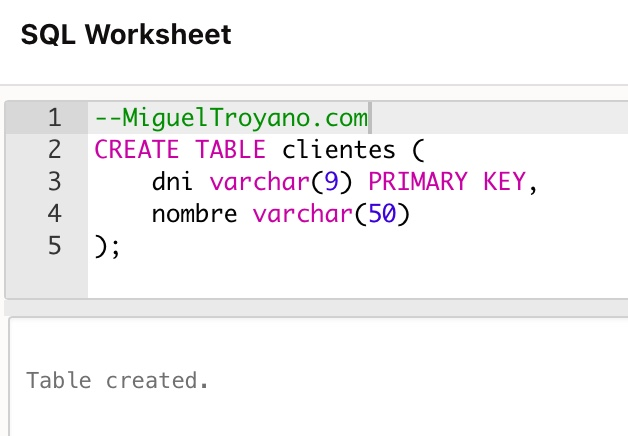
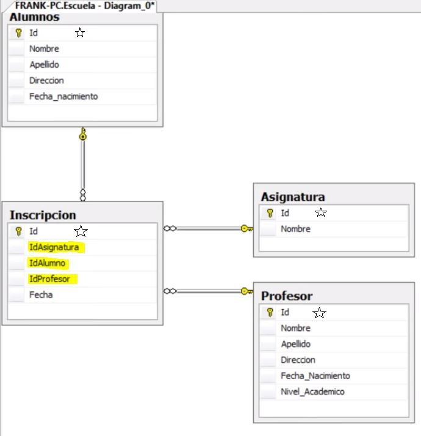
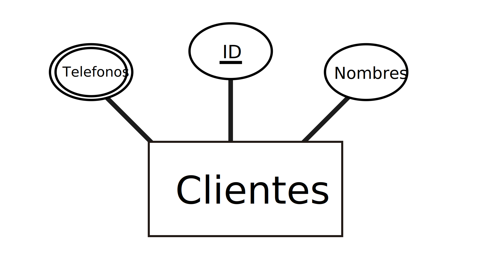

Claves y Relaciones
Las claves y las relaciones son fundamentales para establecer la estructura y la integridad de una base de datos relacional.
Clave Primaria (Primary Key)
Es un campo o conjunto de campos que identifica de forma única cada registro en una tabla. No puede contener valores nulos ni duplicados.
Clave Foránea (Foreign Key)
Es un campo en una tabla que se refiere a la clave primaria de otra tabla. Establece una relación entre las dos tablas.
Clave Candidata (Candidate Key)
Es un campo o conjunto de campos que podría servir como clave primaria, pero no ha sido elegido como tal.
Otros Conceptos Importantes

- Entidad
- Representa un objeto o concepto del mundo real que se desea almacenar en la base de datos. Se traduce en una tabla.
- Atributos
- Son las características o propiedades que describen una entidad. Se convierten en campos de la tabla.
- Modelo
- Es una representación abstracta de la estructura de la base de datos, que muestra las entidades, sus atributos y las relaciones entre ellas.
- Campo
- Es una columna dentro de una tabla que almacena un tipo específico de dato.
- Registro
- Es una fila dentro de una tabla que representa una instancia única de la entidad.
- Tabla
- Es una estructura que organiza los datos en filas y columnas.
- Relación
- Es una conexión lógica entre dos o más tablas, establecida a través de claves foráneas.